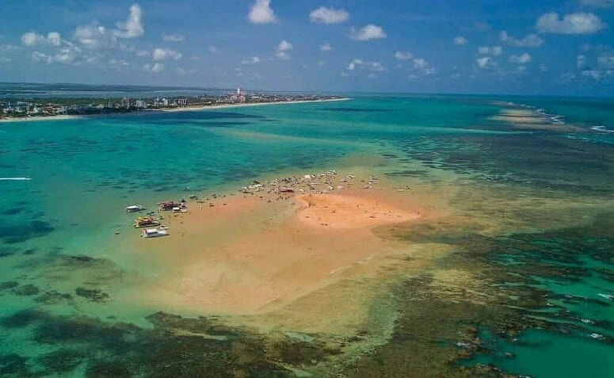
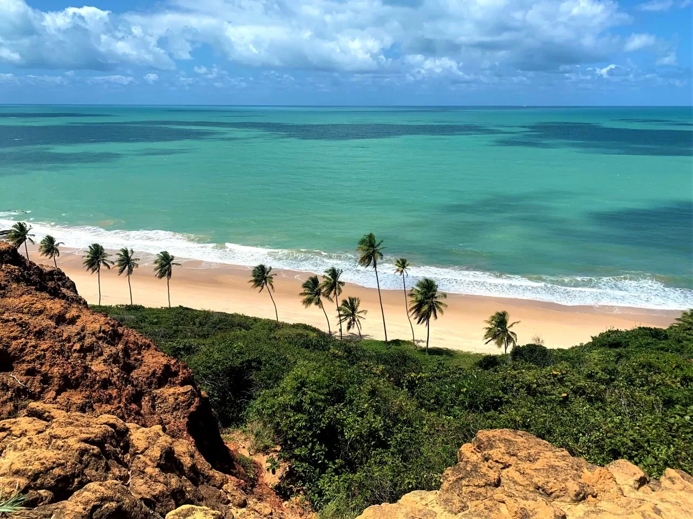
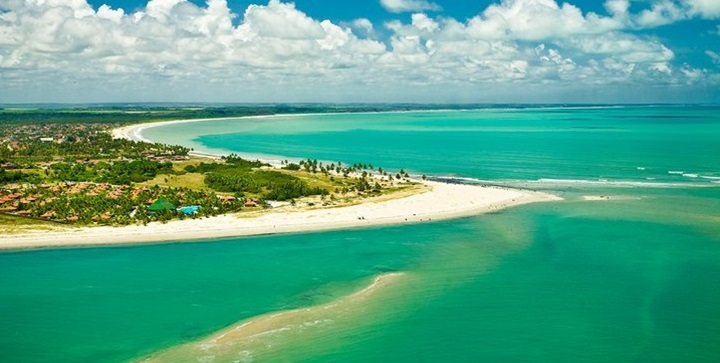

Destinos
-
Areia Vermelha
Descrição
Essa é uma ilha que aparece em meio ao mar apenas durante a maré baixa. Ela é, basicamente, um banco de areia de coloração mais escura, e é daí que se origina seu nome. É o destino ideal para curtir o verão, mergulhar e aproveitar piscinas naturais.
-
Praia de Coqueirinho
Descrição
Mais badalada praia do litoral sul de João Pessoa, a praia de Coqueirinho PB foi eleita uma das 10 praias mais lindas do Brasil. Em realidade existe 2 praias: a praia principal retilínea com quilômetros de comprimento, falésias coloridas e “cânions”, que você percorre com veículo 4×4 de turismo credenciado, pois o trafego é proibido para os outros; a prainha, enseada com visual de matar, onde você desfruta do melhor banho de mar, sendo protegida das ondas maiores por pequenos arrecifes;
-
Praia da Lucena
Descrição
Lucena, localizada a 50 km da Capital, é um município rico em inúmeros atrativos naturais e histórico-culturais. Ao longo dos 15 km de faixa de praias, encontram-se: Costinha, Fagundes, Gameleira, Ponta de Lucena, Lucena, Camaçari e Bonsucesso. Nestas, é possível observar uma mistura entre areia clara e escura durante toda a faixa.
-
Praia do Jacaré

Descrição
A Praia do Jacaré é um destino ideal para aproveitar a natureza, sobretudo o pôr do sol e lindas paisagens. Considerado um dos locais mais procurados próximos de João Pessoa, a praia proporciona ao turistas passeios incríveis e experiências sensoriais sobre o Rio Paraíba.